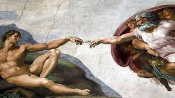
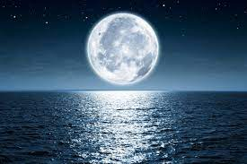

Uno de los movimento más importantes de historia de la humanidad y el que más me gusta es el Renaciomiento. Esta es mi obra favorita, llamada La Creación de Adán, la cual fue pintada por Miguel Ángel y trata de ilustrar el momento en que Dios le dio vida a Adán
Never Be alone de Shawn Mendes es una de mis canciones favorias, el video muscial y la letra trasmiten un lindo mensaje.
Tengo un gran gusto por observa nuestro satelite natural, por eso me encanta todo lo que tiene que ver con la Luna y esta imagen lo demuestra.
Cruel Summer de Taylor Swift, una de mis artistas femeninas favorita, estas es una de sus canciones que más me gusta y que acutualmete estoy escuchando con mucha frecuencia.